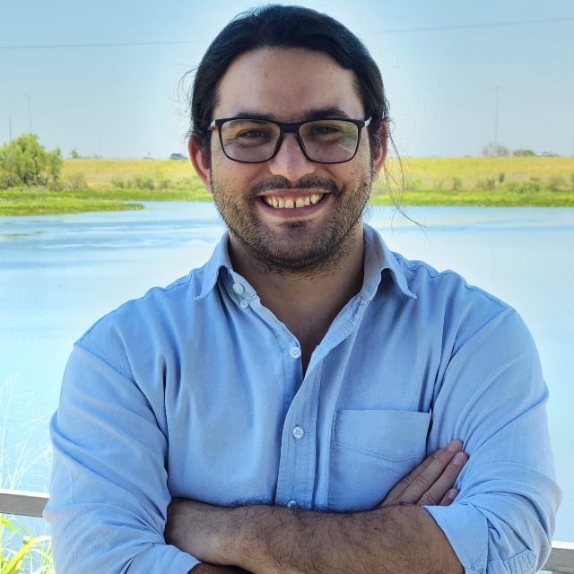

About Me
I'm an Environmental engineer with interest in landscape ecology, carbon dynamics and software development. I have specialized in Remote Sensing (RS) and Geographic Informations Systems (GIS) as well as in spatial data sciences. I work with different types of organizations providing services related to data analysis, spatial intelligence, biodiversity and carbon technical advisory.
Download CVInterests
Education